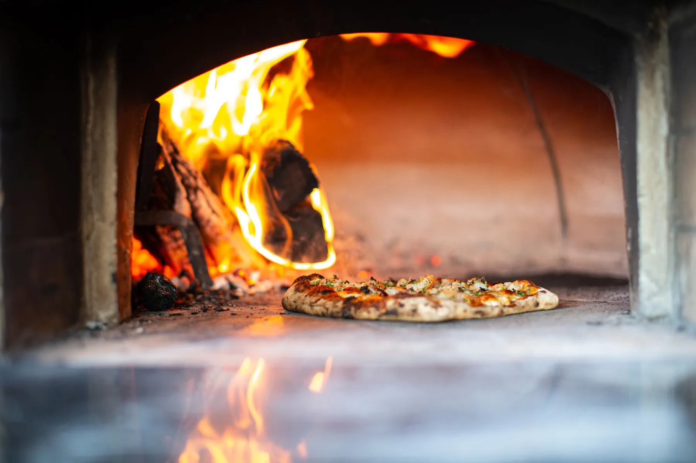
Denizli · Sinpaş & Çamlık
Ateşin başında
Ateşin başında
geçen doksan saniye.
Taş fırından çıkan pizza, elde açılan hamur, sıcak kutu. Seçin, fişiniz yazılsın; şubeyi aradığınızda okumanız yeterli.
Palermo'da pizza acele etmez: hamur dinlenir, fırın ısınır, kutu ancak her şey yerindeyken kapanır.
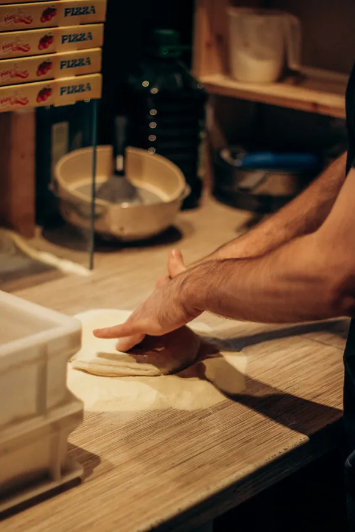
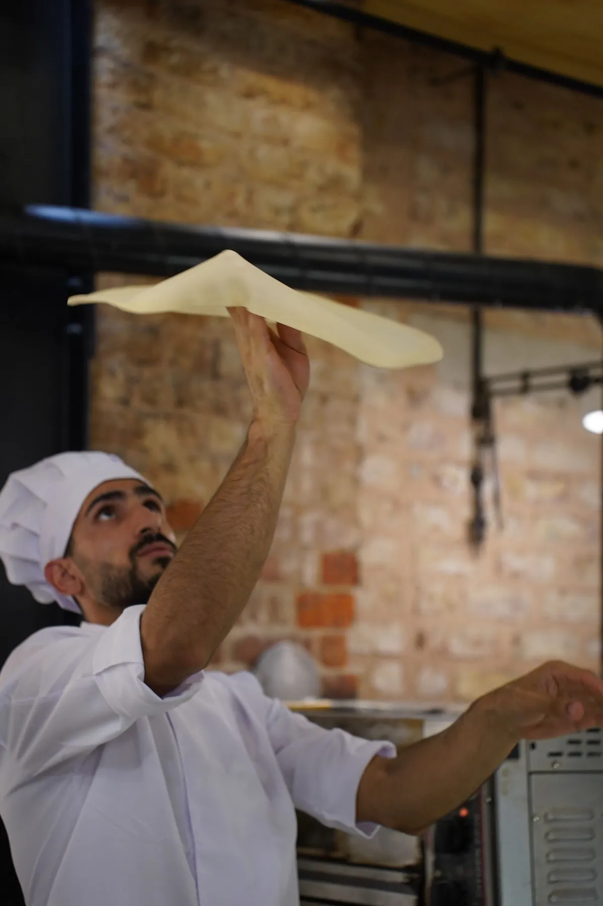
i. Hamur
Elde açılır,
Elde açılır,
ince kalır.
Bu bölümde hamurunuzun hikâyesi durur: kaç saat dinlendiği, hangi unla yapıldığı. Rakamları sizden alırız; uydurma bir cümle yazmayız.
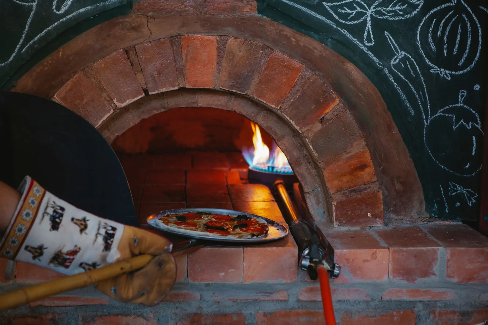
ii. Fırın
Kısa, sıcak,
Kısa, sıcak,
tam kıvamında.
Fırının önünde çekilmiş gerçek bir fotoğraf, sitenin en güçlü karesidir. Çekimi birlikte planlarız: bir akşam, iki şube, bir saat.
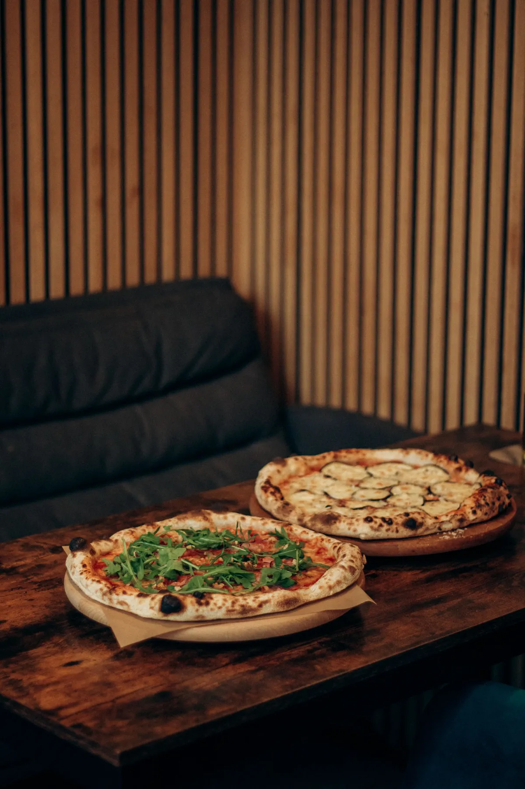
Masaya geldiği an,
sıcak.
Sipariş masası
Seçin, fiş yazılsın.
Şubeler
Size en yakın Palermo.
- Telefon
- 0258 502 02 44
- Çalışma saatleri
- Sizden alınıp eklenecek
- Paket servis
- Telefonla ve Getir Yemek'te
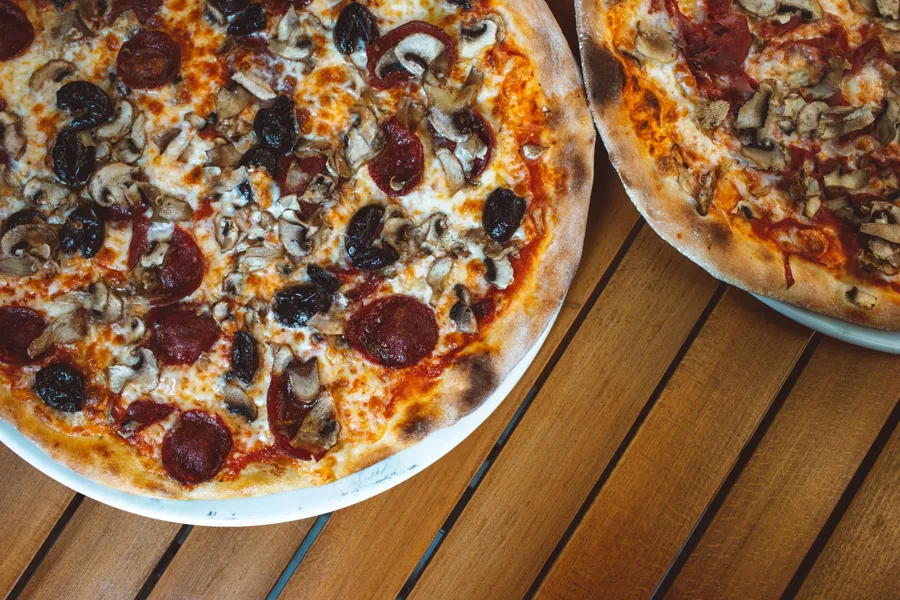
Galeri
Masadan kareler.

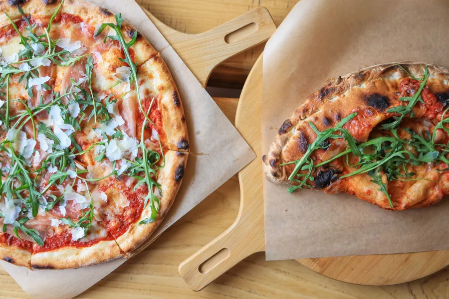
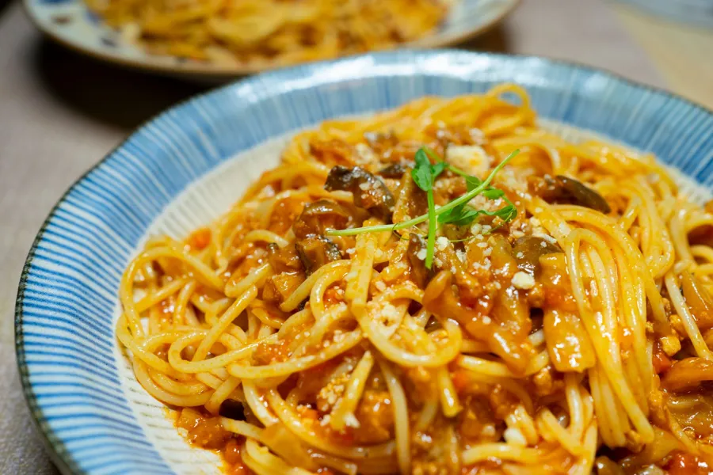
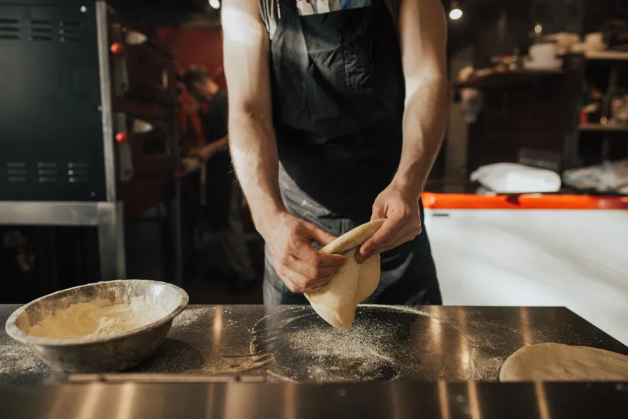
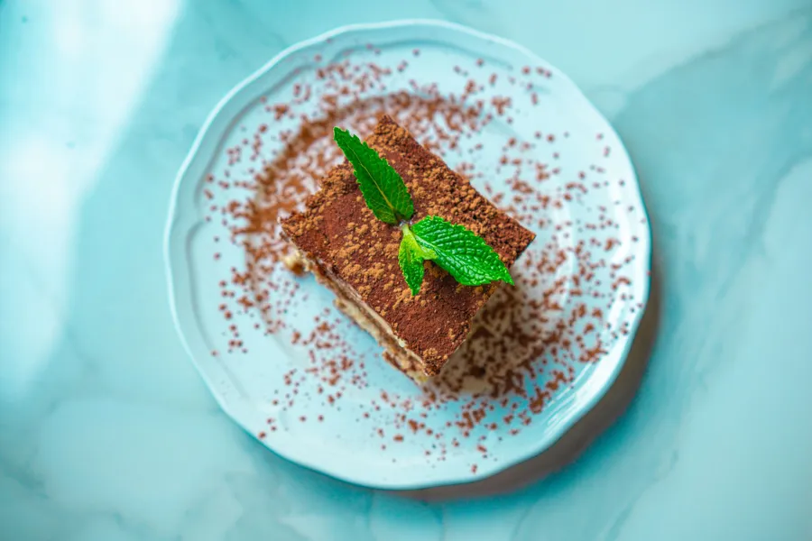
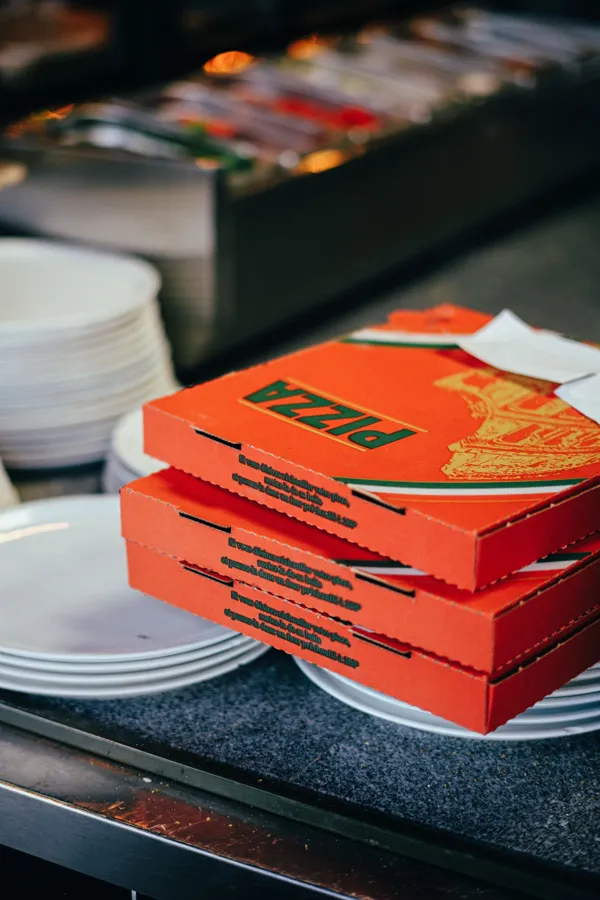
@pizzapalermo2go
Beğendiyseniz, söyleyin.
Google'daki yorumlar bir sonraki misafirin kararını verir. Sitede uydurma puan ya da yorum göstermeyiz; doğrudan Google sayfanıza yönlendiririz.